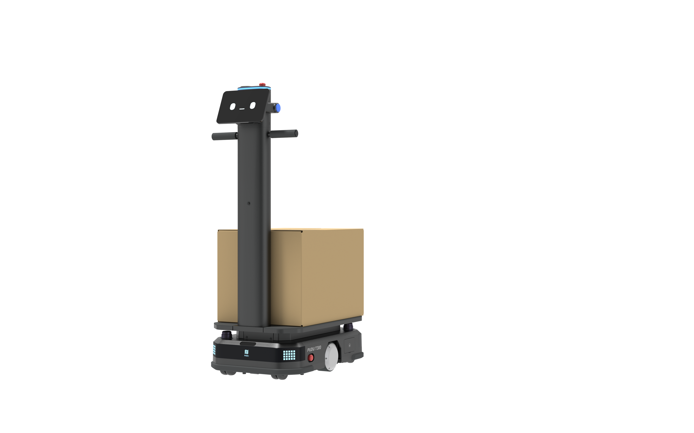
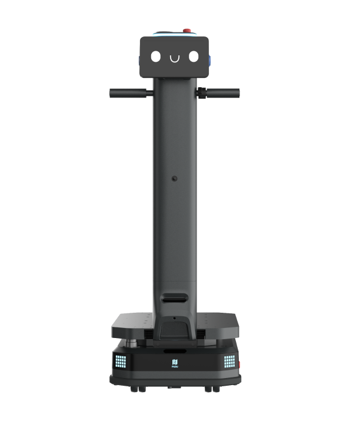
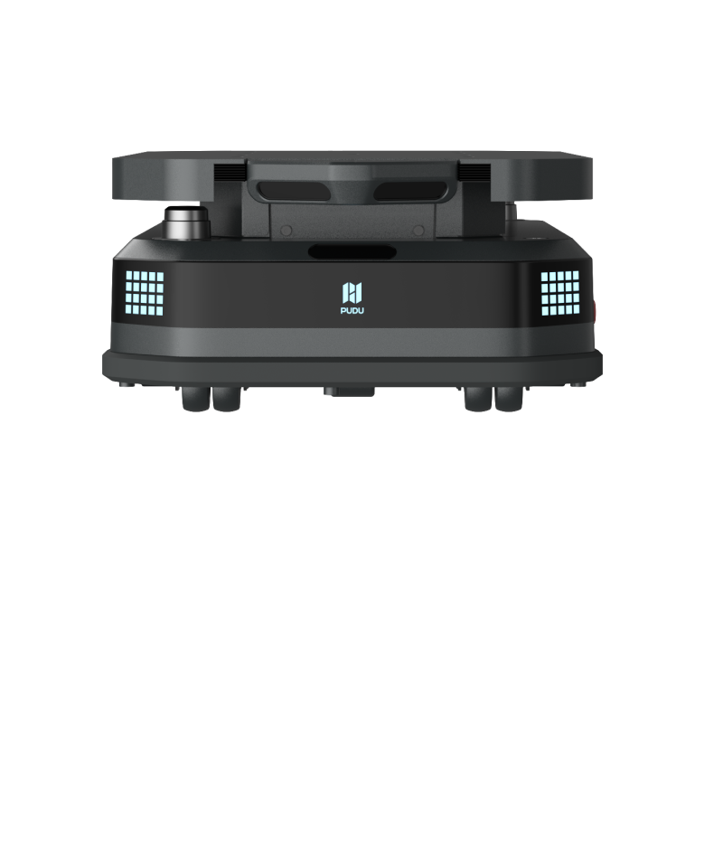

Presnosť v pohybe
VSLAM a LiDAR SLAM vytvárajú stabilnú lokalizáciu bez potreby vodiacej pásky alebo rozsiahlych zásahov do prevádzky.
Autonómne mobilné roboty PUDU premieňajú pohyb materiálu na presný, bezpečný a nepretržitý tok. Od ľahkých komponentov až po 600-kilogramové náklady.

Vyberte robot podľa hmotnosti, spôsobu manipulácie a priestoru. Všetky modely sú navrhnuté pre reálnu priemyselnú prevádzku a jednoduché škálovanie.
Flexibilný autonómny transport pre výrobu, sklady a zásobovanie liniek.
↗Ľahká intralogistika
Kompaktný priemyselný robot pre diely, komponenty a pravidelné logistické okruhy.
↗Ťažký autonómny transport
Vysokokapacitná platforma s ergonomickou rukoväťou pre bezpečný presun ťažkých nákladov.
↗Nízky zdvíhací AMR
Nízky autonómny podjazdový robot, ktorý sa zasunie pod regál, zdvihne ho a premiestni.
↗Roboty vnímajú priestor, vyhýbajú sa prekážkam, komunikujú so systémami budovy a prirodzene spolupracujú s ľuďmi.
VSLAM a LiDAR SLAM vytvárajú stabilnú lokalizáciu bez potreby vodiacej pásky alebo rozsiahlych zásahov do prevádzky.
Senzory, kamery, ochrana proti kolízii a núdzové zastavenie vytvárajú bezpečný priestor pre ľudí aj stroje.
Výťahy, automatické brány, pagery, PUDU Link a podnikové rozhrania spájajú roboty s celým logistickým tokom.
Začnite jednou trasou, jedným typom nákladu a jedným robotom. Následne pridávajte ďalšie úlohy, regály, výrobné linky a zariadenia bez zmeny celej koncepcie.
Ukážka robota · Analýza prevádzky · Návrh nasadenia
Požiadať o konzultáciu